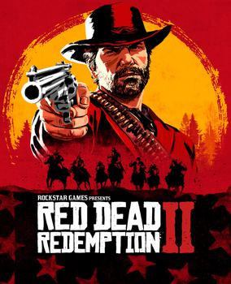
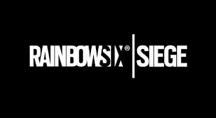
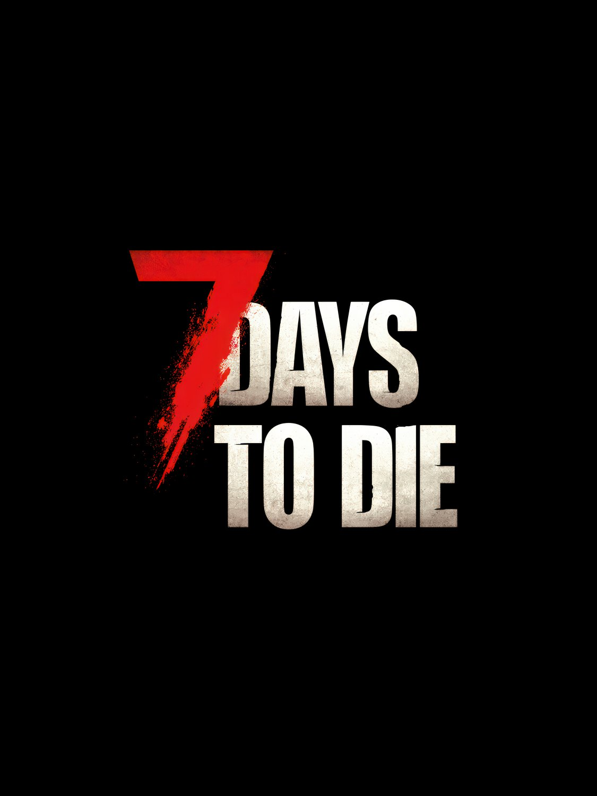
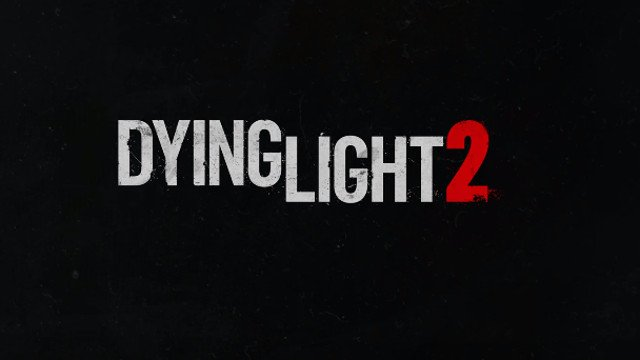

1899 yılının Amerika’sı... Kanun adamları artık son vahşi batı çetelerini tek tek avlamaya başlamış. Arthur Morgan olarak, çocukluğundan beri içinde büyüdüğün Van der Linde çetesiyle birlikte hayatta kalma mücadelesi veriyorsun. Başarısız geçen bir banka soygunu sonrası çete dağlara kaçmak zorunda kalıyor ve işler iyice sarpa sarıyor. Sadece bir kovboyluk oyunu değil; sadakat, ihanet, onur ve değişen dünya düzenine ayak uyduramayan insanların dramı. Atınla doğada gezerken bile o dünyanın yaşadığını hissettiren, her detayıyla sinematik bir başyapıt.

Bu oyun sana "koş ve ateş et" mantığının işe yaramadığını en sert şekilde öğreten taktiksel bir savaş simülasyonu. Dünyanın en elit özel birliklerinden seçilmiş operatörleri kontrol ediyorsun. Bir taraf binanın içine barikatlar kurup tuzaklarla savunma yaparken, diğer taraf kameralarla bilgi toplayıp duvarları patlatarak içeri girmeye çalışıyor. Her operatörün kendine has bir cihazı (balyoz, sinyal kesici, termal kamera vb.) var. Bir duvarın arkasından gelen ayak sesi veya zemindeki ufacık bir delik, maçın kaderini saniyeler içinde değiştirebiliyor.

Nükleer bir felaket sonrası dünya tam bir harabeye dönmüş ve etraf zombilerle dolu. Senin tek amacın, her 7 günde bir gerçekleşen "Kanlı Ay" (Blood Moon) gecesine hazırlanmak. Gündüzleri şehirlerdeki binaları yağmalayıp yemek, su ve inşaat malzemesi topluyorsun. Gece olduğunda zombiler daha agresifleşiyor ama asıl kıyamet 7. günün gecesinde kopuyor. O gece zombiler senin nerede olduğunu biliyor ve dalgalar halinde saldırıyor. Eğer kaleni yeterince sağlam yapmadıysan veya mermin bittiyse o geceden sağ çıkman imkansız. Hem yaratıcılığını hem de hayatta kalma içgüdünü zorlayan bir oyun.

Harran adındaki bir Ortadoğu şehrinde geçen bu oyunda, parkur yeteneklerin senin en büyük silahın. Bir ajan olarak gizli bir dosyanın peşinde şehre sızıyorsun ama kendini zombi kıyametinin ortasında buluyorsun. Gündüzleri binaların tepesinden atlayarak, borulara tırmanarak zombilere yukarıdan bakabiliyorsun. Ancak güneş battığında oyunun rengi tamamen değişiyor. Gündüz hantal olan zombiler yerine, kabus gibi çöken "Volatile"lar ortaya çıkıyor. Gece vakti Harran sokaklarında bir yandan görev yaparken bir yandan da nefes nefese bu yaratıklardan kaçmak, oyun tarihinin en gerilimli anlarından birini yaşatıyor.